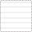

Культурный ландшафт Южного берега Крыма: невосполнимые потери и современные угрозы
объекты природного наследия
объекты культурного наследия
утраченные объекты (участки объектов) наследия

культурный ландшафт под угрозой уничтожения
застройка, разрушающая исторический культурный ландшафт
граница Южного берега Крыма